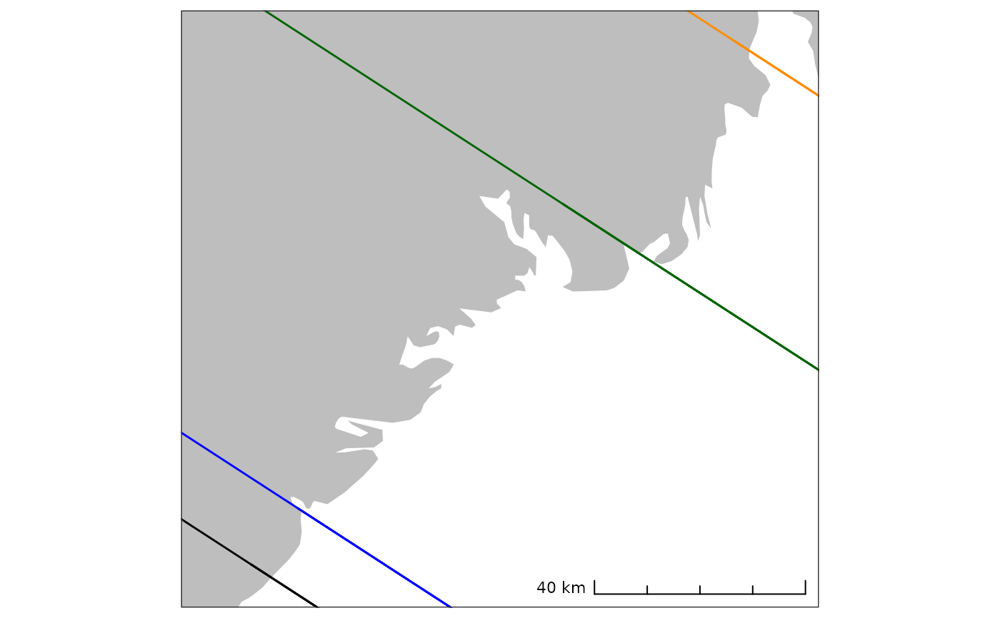

Function to plot the centroids of sites to be dated and shoreline isobases of employed displacement curves on a basemap. Defaults to displaying a light-weight version of the spatial coverage in south-eastern Norway. However, spatial geometries covering other regions can also be provided or temporarily downloaded with the function.
target_plot(
targets = NA,
isobases = sf::st_read(system.file("extdata/isobases.gpkg", package = "shoredate",
mustWork = TRUE), quiet = TRUE),
basemap = sf::st_read(system.file("extdata/naturalearth_basemap.gpkg", package =
"shoredate", mustWork = TRUE), quiet = TRUE),
crs_epsg = 32632,
naturalearth_basemap = FALSE,
naturalearth_zoom = c(20000, 20000),
target_labels = TRUE,
scalebar = TRUE,
scalebar_width = 0.4,
scalebar_style = "ticks",
scalebar_location = "br",
base_fill = "grey",
base_col = NA,
target_shape = 21,
target_col = "black",
target_fill = "red",
target_size = 2.25,
isobase_line = c(Horten = "solid", Porsgrunn = "solid", Tvedestrand = "solid", Arendal
= "solid"),
isobase_col = c(Arendal = "black", Porsgrunn = "darkgreen", Tvedestrand = "blue",
Horten = "darkorange"),
greyscale = FALSE
)Objects of class sf representing the sites to be dated. The
first column beyond geom is taken as site name.
Spatial lines as object of class sf representing the
shoreline isobases. Defaults to isobases with a direction of 327 within the
spatial limit in SE Norway, but create_isobases() can be used to create
isobases with other directions that can then be passed to target_plot().
Object of class sf representing a background map. Defaults
to a light-weight basemap for the spatial limit in SE Norway.
Numeric value specifying the EPSG code of the coordinate reference system (CRS) to be used. Geometries with a different CRS will be re-projected. Defaults to 32632, which is WGS 84 / UTM zone 32N (EPSG:32632).
Logical value specifying if a background map
should be downloaded to be used as a basemap. Downloaded files are stored
with base::tempdir() and deleted when the R session is closed. If TRUE,
overrides the basemap argument. Defaults to FALSE.
A vector of two numerical values specifying the
amount of cropping that is done around provided targets when
naturalearth_basemap is set to
TRUE. Be aware of whether a projected or geographical CRS is specified in
crs_epsg. Defaults to c(20000, 20000).
Logical value specifying whether the targets should be
labelled in the plot. Takes the first column beyond the one holding the
geometries to represent names. If this is not present the targets are
labelled by row number. Defaults to TRUE.
Logical specifying whether a scale bar should be added to the
plot. Defaults to TRUE.
Numerical value specifying the width of the scale bar
by passing it to the width_hint argument of
ggspatial::annotation:scale(). Defaults to 0.4.
Character value specifying the style of the scale bar
by passing it to the style argument of ggspatial::annotation:scale().
Defaults to "ticks".
Character value specifying the location of the
scale bar on the plot by passing it to the location argument of
ggspatial::annotation:scale(). Defaults to "br".
Character value specifying the fill colour of the basemap.
Defaults to "grey".
Character value specifying the outline colour of the
basemap. Defaults to NA.
Numerical value specifying the point shape that represent
the centroids of the targets. Defaults to 21.
Character value specifying the colour parameter for the
points that represent the centroids of the targets. Defaults to "black".
Character value specifying the fill parameter for the
points that represent the centroids of the targets. Defaults to "red".
Numerical value specifying the size of the points that
represent the centroids of the targets. Defaults to 2.25.
Vector of character values specifying the linetype that
is used to represent the isobases of the geologically derived displacement
curves. Defaults to c("Horten" = "solid", "Porsgrunn" = "solid", "Tvedestrand" = "solid", "Arendal" = "solid").`
Vector of character values specifying the colours used
for the lines that represent the isobases of the geologically derived
displacement curves. Defaults to c("Arendal" = "black", "Porsgrunn" = "darkgreen", "Tvedestrand" = "blue", "Horten" = "darkorange").`
Logical value indicating whether the plot should include
colours or not. Overrides other graphical parameters When set to TRUE.
Defaults to FALSE.
A ggplot that displays a background map with the location of the shoreline isobases within the spatial coverage in south-eastern Norway, unless geometries for other regions are provided. If provided, the function also plots the position of target locations represented as centroids.
# Display the background map and default isobases
target_plot()
